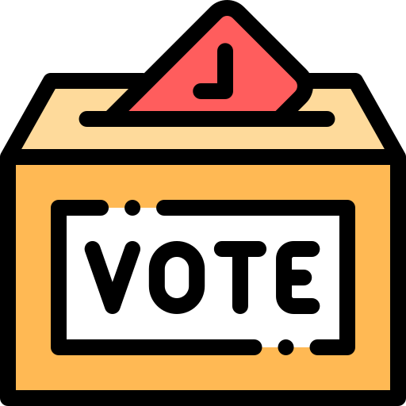

Primera vez en la historia de Chile que se elige democraticamente si se desea redactar una nueva constitucion y a través de que mecanismo.
Se votara por distritos y los candidatos a constituyentes pueden pertenecer a un partido politico o ser independientes.
La nueva carta magna sera redactada por una Convencion Constituyente compuesta por 155 miembros electos por votacion popular el 11 de abril de 2021.